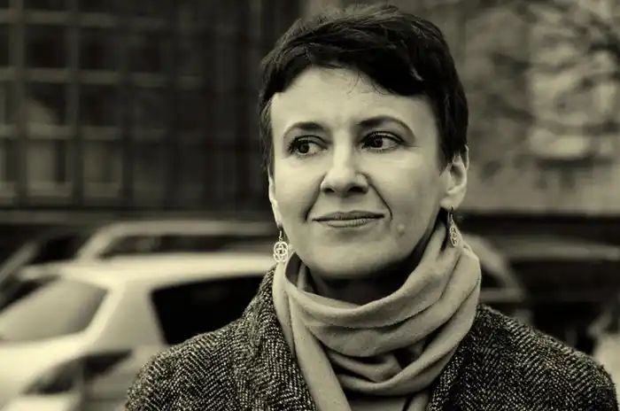
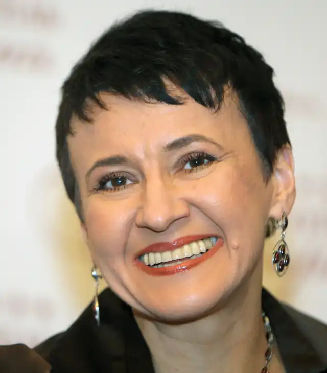

Оксана Забужко народилася 19 вересня 1960 року в місті Луцьк. За словами письменниці, правдиве родове прізвище оригінально було не "Забужко", а "Забузькі". В Луцьку жила до 8 років, поки її батька не виявило КГБ, що переслідувало його кілька років. Після цього родина була вимушена переїхати до Києва.
Закінчила філософський факультет (1977-1982) та аспірантуру з естетики (1985) Київського університету імені Тараса Шевченка.
Була членом КПРС. Учасниця революції на граніті 1990 року. Захистила кандидатську дисертацію на тему "Естетична природа лірики як роду мистецтва". Виключно літераторством трудовий досвід Забужко не обмежується. Довгий час вона працювала викладачем. Причому лекції кандидата філософських наук Забужко пощастило відвідати студентам не тільки Київської державної консерваторії ім. П. Чайковського, де Забужко читала естетику, а також студентам таких всесвітньо відомих університетів як Гарвардський, Єльський, Колумбійський. Починаючи з 1989 р. Забужко є старшим науковим співробітником Інституту філософії НАН України. 1992 року викладала україністику в Університеті штату Пенсильванія як запрошений письменник. У 1994 авторка отримала стипендію Фонду Фулбрайта і викладала в Гарвардському та Піттсбурзькому університетах. Творча діяльність В Україні Забужко від 1996 (від часу першої публікації роману-лонґселера "Польові дослідження з українського сексу") залишається найпопулярнішим україномовним автором — загальний наклад проданих її книжок станом на 1 січня 2003 становить понад 65 тис. примірників. Крім того вона є авторкою численних культурологічних статей і есе у вітчизняній та зарубіжній періодиці. Оксана Забужко провадила авторську колонку в деяких періодичних виданнях ("Panorama", "Столичные новости" тощо), вела літературні майстер-класи в Київському університеті. Твори Забужко здобули також міжнародне визнання, особливо широке — в Центральній та Східній Європі. Її вірші перекладалися 16 мовами світу і 1997 удостоєні Поетичної Премії Global Commitment Foundation (Фонду Всесвітнього Зобов’язання, США). Серед інших її літературних нагород — премії Фонду ім. Гелен Щербань-Лапіка (США, 1996), Фундації Ковалевих (1997), Фонду Рокфеллера (1998), Департаменту культури м. Мюнхена (1999), Фундації Ледіґ-Ровольт (2001), Департаменту культури м. Ґрац (2002) та ін. Оксана Забужко живе на письменницькі гонорари. Значна частка її доходу — надходить від книг, виданих за кордоном. Твори Забужко змогли завоювати європейські країни, та мають своїх прихильників у США. У 1985 році вийшов перший збірник віршів Забужко "Травневий іній". Оксана Забужко — член Асоціації українських письменників. У серпні 2006 року журнал "Кореспондент" включив Забужко в число учасників рейтингу ТОП-100 "Найвпливовіших людей в Україні", до цього в червні книга письменниці "Let my people go" очолила список "Краща українська книга", ставши вибором читачів Кореспондента № 1. Нагороди 16 січня 2009 року Президент України В.Ющенко нагородив Оксану Забужко орденом княгині Ольги III ст. за вагомий особистий внесок у справу консолідації українського суспільства, розбудову демократичної, соціальної і правової держави та з нагоди Дня Соборності України. 2012 року отримала відзнаку "Золотий письменник України".